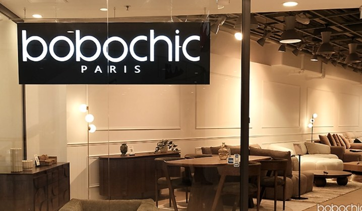
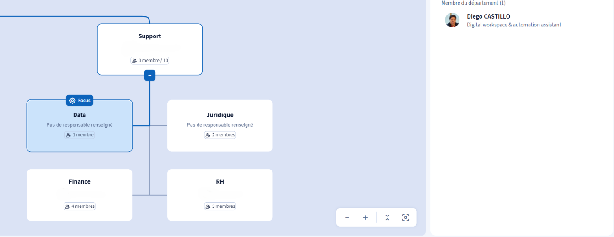

Une marque de mobilier née sur internet
Bobochic Paris est une marque française de meubles contemporains et d’accessoires de décoration. Elle a été lancée en 2015 par Sébastien Réa et Emmanuel Mendes avec un apport de départ de 6 000 €, sans levée de fonds ni investisseur extérieur. D’abord 100 % digitale, la marque s’est fait connaître par un style audacieux et une communication décalée, jusqu’à devenir un acteur reconnu du mobilier en ligne en France.
Exploitée par la société NEGOMARKETS, dont le siège est installé à Vincennes, l’entreprise a réalisé un chiffre d’affaires de 39,7 M€ en 2022. Elle a également testé la vente physique avec des boutiques éphémères à Paris, à Lille et à Levallois-Perret.

Technicien informatique au sein du Support
J’ai rejoint l’équipe de Bobochic en octobre 2025 en tant que technicien informatique (intitulé officiel : Digital workspace & automation assistant).
Dès mon arrivée, j’ai occupé un poste aux missions variées, allant de la maintenance et de la réparation du parc informatique à la gestion des droits d’accès des utilisateurs.
Aujourd’hui, je suis le seul membre de la BU Data, rattachée au service Support. Cette position me permet de travailler directement avec les différents collaborateurs de l’entreprise et de bénéficier d’une grande autonomie dans mon travail, notamment pour proposer et initier de nouveaux projets auprès de mon responsable.

Identité de l’entreprise
Les informations clés de Bobochic Paris
Localisation
Siège social : 5-7 avenue de Paris, 94300 Vincennes